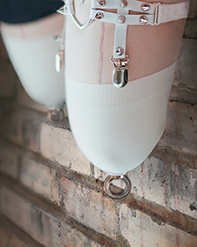

Wierzę, że wiesz, kim jestem. Stworzyłem wiele niewolnic dla Twojej przyjemności i znacznie powiększyłem swoją własną kolekcję. Jeśli nie wiesz kim jestem, odpowiedź jest prosta: znalazłem bardzo dochodowy biznes w porywaniu ładnych, młodych dziewcząt i transformowaniu ich w żywe lalki erotyczne, aby zaspokoić wszystkie Twoje seksualne i brutalne potrzeby. Nie mogą uciec. Nie mogą mówić. Możesz je wykorzystywać jak tylko chcesz. Są teraz żywymi zabawkami i należą do Ciebie.
Moje chirurgiczne podejście do transformacji młodych dziewcząt zmieniło się nieco na przestrzeni lat. Wierzę, że moje modyfikacje zaowocowały stworzeniem jeszcze bardziej wytrzymałej i posłusznej zabawki. Jestem bardzo zadowolony z dziewcząt, które zatrzymałem dla siebie. Pierwszym ulepszeniem było zastosowanie metalowych prętów mocowanych do kości udowej i ramiennej po amputacji. Metalowe pręty powodowały martwicę i następującą po niej osteoporozę, która prowadziła do łamania kości. Kończyny łamały się, rwały, a nawet całkowicie odpadały podczas ostrego seksu lub krępowania/podwieszania lalki. Było to bardzo rozczarowujące, ponieważ używanie jej ust, gdy wisi nad Twoim łóżkiem, jest bardzo satysfakcjonującym doświadczeniem, ale robi się straszny bałagan, gdy nogi się odrywają. Byłem jednak bardzo zadowolony z faktu, że żadna z lalek nie krzyczała z bólu. Ich mentalne uwarunkowanie na fizyczne znęcanie się sprawiło, że stały się obojętne na nadużycia. Nie trzeba dodawać, że musiałem przeprowadzić wiele operacji, aby znaleźć odpowiednie rozwiązanie.
Proces ten jest o wiele bardziej złożony i obecnie składa się z czterech operacji, aby zapewnić przetrwanie i wytrzymałość. To bardzo ważne, aby wszystkie dziewczęta były młode i zdrowe, aby szanse na powrót do zdrowia były większe. Pierwsze dwie operacje są proste: amputacja nóg, pozwolenie dziewczynie na wyleczenie się, a następnie amputacja ramion z pozostawieniem kości udowych i ramiennych w celu przymocowania elementów. Ważne jest, aby były to dwie pierwsze operacje, nie tylko ze względu na ich ciężar, ale to powstrzymuje dziewczynę przed możliwością ucieczki. W tym okresie dziewczyna jest pod silnymi środkami uspokajającymi, co nie tylko ułatwia radzenie sobie z nią, ale też uszkodzenia psychiczne wynikające z wielomiesięcznej dezorientacji sprawiają, że później jest bardzo podatna na znęcanie się psychiczne.
Po kilku tygodniach opieki upewniającej mnie, że nogi i ręce wystarczająco się zagoiły, dziewczyna zostanie ponownie uśpiona i umieszczona na stole operacyjnym. Wtedy rozcinam jej uda aż do kości i wzdłuż biodra, gdzie następnie mocuję wykonany na zamówienie pręt ze stali morskiej z przyspawanym na końcu zaczepem oczkowym. Ten rodzaj metalu zmniejsza ryzyko martwicy i będzie znacznie stabilniejszy przy krępowaniu. Proces ten powtarzam kilka tygodni później w przypadku ramion, z nacięciem sięgającym aż do barku. Robię bardzo czyste cięcia, więc blizny są minimalne.

Ten proces trwa kilka tygodni i trzeba bardzo dobrze dbać o rany, ale efekt jest znacznie lepszy. Możesz być dla niej tak brutalny, jak tylko zechcesz.
W trakcie długiego okresu pierwszych operacji, zacząłem korzystać z czasu oczekiwania. Obecnie podejmuję się zadania usunięcia wszystkich jej zębów i wszczepienia silikonowych wkładek, ponieważ nie jest to dla niej aż tak obciążający zabieg i będzie w stanie dojść do siebie. Pozwala to na używanie jej ust podczas gdy jej ręce i nogi się goją. Ma to dodatkową korzyść, odwracając uwagę od bólu po amputacji, a usunięcie jej zębów szybciej rozpoczyna wprowadzanie zamętu zmysłowego pomiędzy bólem a przyjemnością. W tym czasie celowo zmniejszam dawkę jej środków uspokajających, aby cierpiała jak najbardziej. Jest wdzięczna, że ma coś, co odwraca jej uwagę od bólu. Przez ten czas trzymam ją również z zawiązanymi oczami i zatkanymi uszami, aby zacząć odcinać ją od pozostałych zmysłów. Gdy już wyzdrowieje, mogę usunąć jej struny głosowe - wtedy fizycznie staje się już niemal w pełni zabawką i można rozpocząć trening psychiczny.
W miarę powiększania mojej kolekcji własnych lalek zmieniłem sposób przechowywania dziewczyny podczas jej psychicznego treningu w zakresie wykorzystywania seksualnego i dezorientacji. Teraz będę ją wieszał pod sufitem razem z pozostałymi i zdejmował jej opaskę z oczu oraz zatyczki do uszu. Ważne jest, aby każda dziewczyna rozumiała, czym one są. Następnie podłączam do niej wibrator, wybieram jedną z moich istniejących lalek i zaczynam ją wykorzystywać, podczas gdy nowe zabawki patrzą i czerpią przyjemność. To w końcu sprawi, że dziewczyna będzie podniecona tym, kim jest, i nie tylko będzie bardziej posłuszna, ale także będzie czerpać przyjemność z bycia twoją zabawką. Została w pełni złamana, będzie czerpać przyjemność z bólu i będzie posłuszna.
Gdy zakończy już swój trening psychiczny i stanie się nie tylko zabawką fizycznie, ale i psychicznie, wykonuję ostatnie kroki, aby na zawsze pozostała twoją niewolnicą.
Tak jak wcześniej, ogłuszam ją, odtwarzając wielokrotnie w ciągu dnia przez wiele godzin niezwykle głośne dźwięki, ale dodałem do tego użycie rurki próżniowej, zakładając ją na jej uszy i gwałtownie zmieniając ciśnienie. Będzie całkowicie głucha, bez szans na powrót słuchu. Wcześniej uszkadzałem dziewczynom oczy laserem. To nadal pozostawiało moim lalkom zdolność dostrzegania zmian światła i cieni. Sprawiało to również, że oczy wyglądały na mleczne, uszkodzone i nieatrakcyjne.
Aby pozbawić ją wzroku, postanowiłem całkowicie usunąć oczy. W tym momencie znieczulenie nie jest już konieczne. Dziewczynki nie ruszają się i pozwolą ci robić z nimi, co tylko zechcesz. Przed enukleacją, zamiast znieczulać dziewczynkę, dodatkowo odwracam jej uwagę stymulacją seksualną, tak aby jej ostateczne przejście w lalkę było wypełnione ogromną przyjemnością i bólu. Po usunięciu oczu daję czas na zagojenie się i tworzę dla niej protezy oczu. Ręcznie dopasowuję oczy do pozostałych mięśni ocznych i zawartości oczodołu każdej lalki, dzięki czemu oczy pozostają na swoim miejscu na zawsze i nadal mogą się poruszać! Podczas usuwania oczu zszywam nadmiar skóry powiek, co pozwala im się zamykać. Dzięki temu pozostają naturalnie otwarte.
Wszystko to ma wysoką cenę. Niestety, nasilające się zawirowania finansowe spowodowały zamknięcie wielu sierocińców, które od dawna były moim stałym źródłem młodych dziewcząt. Jednak, zmęczyły mnie rzeczy łatwo dostępne i posłuszne. Musiałem zwrócić się ku innym metodom pozyskiwania. Odkryłem, że dziewczynki wyrwane ze szczęśliwego życia są znacznie bardziej satysfakcjonującymi i uległymi lalkami, a także stanowią większe wyzwanie, które pokochałem. Manipulacja psychiczna jest znacznie bardziej niszcząca, gdy zdają sobie sprawę, że ich życie nie należy już do nich. To, wraz z moimi nowymi metodami, podnosi cenę moich lalek od 100 000,00 do 150 000,00 USD bez kosztów wysyłki, ale żywa zabawka oddana dostarczaniu Ci satysfakcji tak długo, jak tylko zechcesz, to rzadka przyjemność.
Skontaktuj się ze mną, jeśli chcesz mieć taką dla siebie.